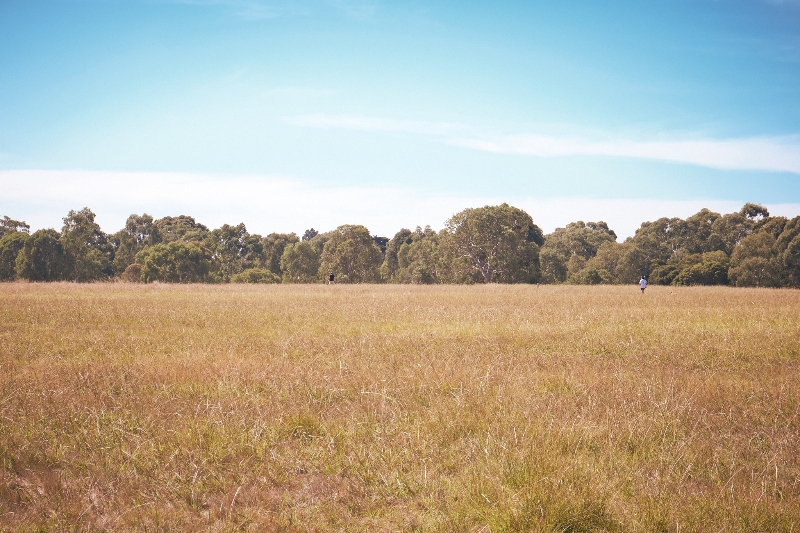

Introduction
Grass, the quiet companion of the earth, exists in different forms throughout parks—each patch of grass offering a unique presence. Some areas are meticulously maintained, while others are allowed to grow wild and untamed. These two types of grass not only differ in appearance but also in the sensory experience they offer. In this post, we explore the contrast between manicured and wild grass areas in parks, delving into their aesthetic, ecological, and sensory roles. We also include an immersive audio experience, capturing the whispers of the wind through the grass.
The Manicured Lawn: Order in the Green
Description: The manicured lawn, often found in the center of parks or near pathways, is a prime example of human care and control over nature. The grass here is kept short, neat, and uniform, with every blade trimmed to perfection. It’s an inviting space for picnics, leisure, and play. The smooth, well-kept surface invites people to rest, walk, or run without obstruction, offering a sense of order and calm. While the manicured lawn can appear peaceful and serene, it often lacks the variety and complexity of a more natural space.
The Wild Grass Areas: A Symphony of Growth
Description: In contrast, wild grass areas thrive without interference, growing in an organic, untamed fashion. These areas are often found along the edges of parks, near wetlands, or in areas that are less frequented by visitors. The grass here is varied in height and type, from tall grasses swaying in the wind to shorter, more delicate varieties. These natural spaces are rich in biodiversity, offering homes for insects, small animals, and a variety of plants.
The wild grass fields provide a dynamic environment where nature follows its own rhythms. The sway of the grass in the wind creates a visual and auditory experience that is constantly shifting. Unlike the manicured lawn, which is quiet and still, the wild grass areas come alive with movement and sound, making them a true reflection of nature’s unpredictability and beauty.
Soundscape: The Wind and Grass
Description: Perhaps the most striking difference between the manicured lawn and wild grass areas is the sound. The gentle rustle of the wind through the blades of grass in the wild areas creates a soft, soothing sound that speaks of the earth's rhythms. It’s a sound that is ever-changing, influenced by the wind, the seasons, and the surrounding environment.
In contrast, the manicured lawn is much quieter. The shorter grass does not sway or rustle in the same way, creating a sense of stillness and calm. There’s a certain silence to a well-maintained lawn, where the only sounds are those of human activity—footsteps, chatter, and laughter.
Experience the Sound of the Wind and Grass
Listen to the sound of wind through the wild grasses, capturing the essence of untamed nature. Click the play button below to immerse yourself in the sensory experience of the park’s wild areas.
Conclusion
The contrast between manicured lawns and wild grass areas is a reflection of the balance between human control and nature’s wildness. While the manicured lawn offers order and structure, the wild grass areas embody the unpredictability and beauty of natural growth. Both play essential roles in the park’s ecosystem, contributing to its beauty, biodiversity, and sensory experience. As you wander through the park, take a moment to notice the subtle differences—the sound of the wind, the texture of the grass, and the ever-changing patterns of nature.